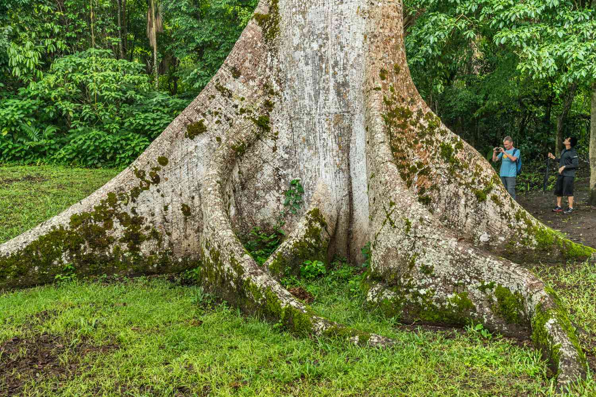
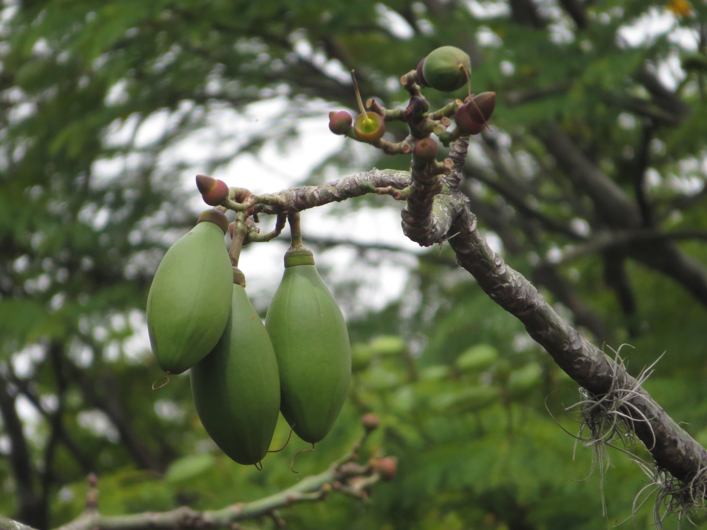

Ceiba
Ceiba pentandra


Descripción
La Ceiba es uno de los árboles más majestuosos e imponentes de Nicaragua. Puede alcanzar alturas de hasta 70 metros, siendo uno de los árboles más altos de los bosques tropicales. Su tronco puede medir varios metros de diámetro y está cubierto de espinas cónicas en los ejemplares jóvenes.
Este árbol sagrado para muchas culturas mesoamericanas es considerado el árbol nacional de Guatemala y tiene profundo significado espiritual en Nicaragua.
Ubicación en Nicaragua
Crece principalmente en bosques tropicales húmedos de los departamentos de:
- Atlántico Norte
- Atlántico Sur
- Rivas
- Masaya
- Chontales
Datos Curiosos
- Puede vivir más de 300 años.
- Sus raíces tabulares pueden extenderse varios metros del tronco.
- Produce una fibra vegetal llamada "kapok" usada como relleno.
- Para los mayas, la ceiba conectaba el inframundo con el cielo.
- Sus frutos contienen semillas envueltas en fibra similar al algodón.
- Crece aproximadamente 3 metros por año en condiciones óptimas.
Beneficios y Usos
- Ecológica: Refugio y alimento para innumerables especies.
- Cultural: Árbol sagrado en tradiciones indígenas.
- Textil: La fibra kapok se usa en rellenos y aislamiento.
- Medicinal: Diversas partes se usan en medicina tradicional.
- Madera: Utilizada en construcción de canoas tradicionales.
- Conservación: Indicador de ecosistemas saludables.